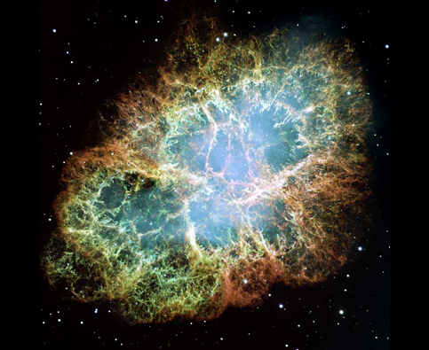

Telescopio Hubble
Lanciato in orbita nel 1990, il telescopio Hubble della NASA ha rivoluzionato l'astronomia e ha ispirato una generazione con le sue maestose viste dell'universo. Per celebrare il 20° compleanno di Hubble, abbiamo collaborato con i nostri amici dello Space Telescope Science Institute per condividere le nostre 20 immagini preferite di Hubble. Sfoglia le immagini qui di seguito, guarda questo video o scarica il nostro nuovo tour di Hubble in Google Earth e vola verso queste zone dello spazio!
- Pilastri nella Nebulosa della Carena
- Ammasso globulare M80
- Ammasso stellare NGC 602
- Pilastri nella Nebulosa Aquila
- Nebulosa di Orione
- Nebulosa Farfalla NGC 6302
- Stella Eta Carinae
- Nebulosa del Granchio
- Galassia a spirale M51
- Galassia Sombrero
- Centro della galassia M87
- Galassie "Topo" interagenti
- Gruppo di galassie Quintetto di Stephan
- Ammasso di galassie Abell 2218
- Campo ultraprofondo di Hubble
- Nebulosa Anello
- Nebulosa Occhio di gatto
- Stella variabile V838 Monocerotis
- Nebulosa della Carena
- Galassia a spirale barrata NGC 1300
- Invia un messaggio a Hubble
Pilastri nella Nebulosa della Carena
Immagine per il 20° anniversario di Hubble raffigurante una montagna di gas e polveri alta tre anni luce con colonne di gas flagellate dalla radiazione di stelle giovani all'interno del pilastro. Ulteriori informazioni

Ammasso globulare M80
L'ammasso globulare M80, culla di centinaia di migliaia di stelle tenute insieme dalla gravità, è uno degli ammassi più densi della Via Lattea. Ulteriori informazioni

Ammasso stellare NGC 602
La radiazione di stelle appena nate scava una cavità al centro di una regione a elevata formazione stellare nella Piccola Nube di Magellano. Ulteriori informazioni

Pilastri nella Nebulosa Aquila
Pilastri di gas nella Nebulosa Aquila scolpiti da venti e radiazioni stellari. All'interno dei pilastri si formano stelle allo stadio embrionale. Ulteriori informazioni
Nebulosa di Orione
All'interno di un'area cava oscurata da polveri e gas, si stanno formando migliaia di stelle. In questa immagine della Nebulosa di Orione sono presenti più di 3000 stelle di varie dimensioni. Ulteriori informazioni
Nebulosa Farfalla NGC 6302
Gas riscaldati a più di 36.000 gradi Fahrenheit penetrano nello spazio a più di 600.000 miglia all'ora formando la nebulosa a forma di farfalla. Ulteriori informazioni
Stella Eta Carinae
La Eta Carinae 150 anni fa divenne per breve tempo una delle stelle più luminose del cielo australe a causa dell'esplosione che produsse le polveri dei suoi lobi polari. Ulteriori informazioni
Nebulosa del Granchio
La nebulosa del Granchio è ciò che resta di una stella morente trasformatasi in una supernova così brillante da essere osservata e registrata nel 1054. Al centro della nebulosa si trova una stella di neutroni o pulsar. Ulteriori informazioni

Galassia a spirale M51
Questa immagine della galassia a spirale M51, conosciuta anche come "galassia Vortice", mostra lunghi bracci di stelle e gas avviluppati a polveri. Ulteriori informazioni

Galassia Sombrero
La galassia Sombrero, che accoglie un buco nero supermassiccio e un ricco sistema di quasi 2000 ammassi globulari, è vista quasi di profilo dal punto di vista della Terra. Ulteriori informazioni

Centro della galassia M87
Un getto di gas caldi parte dal centro della galassia ellittica gigante M87 segnalando la presenza di un buco nero supermassiccio grande 2,6 miliardi di volte la massa del Sole. Ulteriori informazioni

Galassie "Topo" interagenti
Lunghi raggi di stelle e gas si sprigionano da due galassie in collisione denominate "Topo", che si fonderanno in un'unica galassia tra circa 500 milioni di anni. Ulteriori informazioni
Gruppo di galassie Quintetto di Stephan
Galassie in bilico in una danza cosmica nel gruppo di galassie Quintetto di Stephan. Quattro di queste galassie si trascinano a vicenda per via della forza di gravità. Ulteriori informazioni

Ammasso di galassie Abell 2218
La massa dell'ammasso di galassie Abell 2218 distorce e amplifica la luce delle galassie al di là dell'ammasso, permettendoci di vedere galassie lontane nell'universo. Ulteriori informazioni
Campo ultraprofondo di Hubble
Questa vista di quasi 10.000 galassie cattura i dettagli più fiochi dell'universo mai osservati in termini di luce visibile. Rivela miliardi di anni luce di storia galattica. Ulteriori informazioni.
Nebulosa Anello
Hubble immortala le emissioni di gas di una stella morente. Al centro della nebulosa Anello, che fluttua a circa 2000 anni luce dalla Terra, si trova una nana bianca. Ulteriori informazioni
Nebulosa Occhio di gatto
Undici anelli di gas concentrici circondano la stella morente della Nebulosa Occhio di gatto, una delle nebulose planetarie più complesse mai scoperte. Ulteriori informazioni

Stella variabile V838 Monocerotis
La luce si sposta verso l'esterno di un'esplosione stellare, illuminando vaste regioni di polveri e gas solitamente invisibili. Ulteriori informazioni

Nebulosa della Carena
Una vista larga 50 anni luce sulla nebulosa della Carena mostra un vortice di stelle nascenti e morenti. Ulteriori informazioni
Galassia a spirale barrata NGC 1300
La galassia NGC 1300 presenta una lunga barra centrale che collega i bracci della spirale. La nostra Via Lattea è una galassia a spirale barrata. Ulteriori informazioni
Invia un messaggio a Hubble
Entra a far parte del corso della storia. Per celebrare il suo 20° anniversario, puoi inviare a Hubble un messaggio che verrà inserito in una capsula del tempo. Ulteriori informazioni